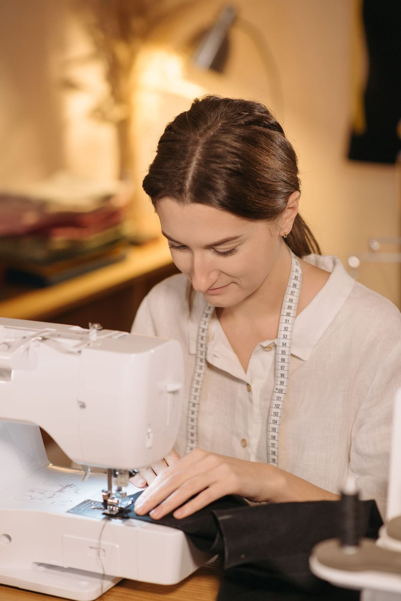
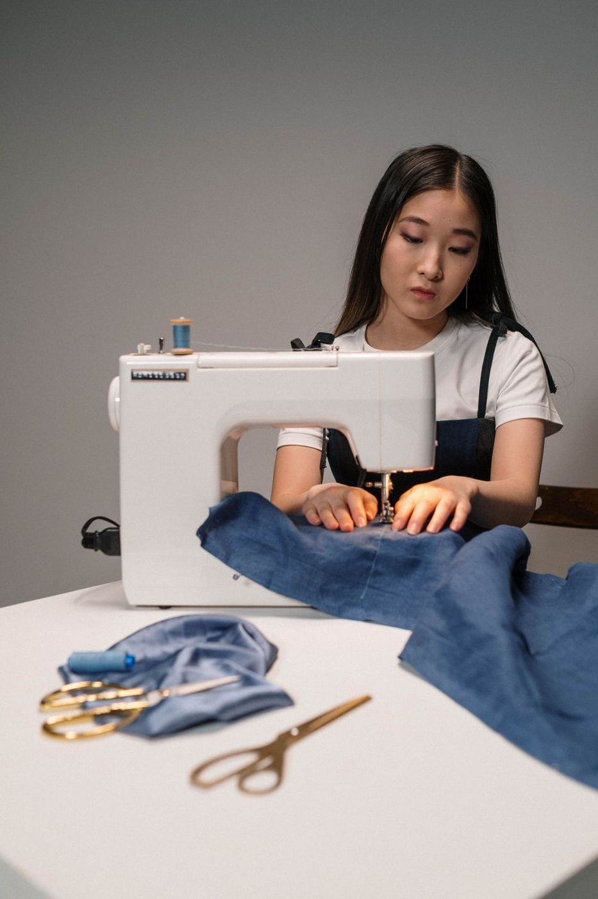

АТЕЛЬЕ В ДЗЕРЖИНСКЕ
Срочный ремонт
одежды и пошив
на заказ.
От замены молнии до пошива по вашим меркам.
Бережно к вещи, внимательно к деталям.
От любимых джинсов до особенного платья.
С вниманием к каждой
детали.

заботимся о ваших вещах
в разных районах города
работаем без выходных
Мастер оценит работу
и назовёт цену до начала.
01 / ЧЕМ МОЖЕМ ПОМОЧЬ
Хорошие вещи
стоит сохранить.
Маленькая поправка или большая идея —
найдём решение для вашей
вещи.
Ремонт и подгонка
Замена любых молний, ремонт трикотажа
и подгонка одежды по
фигуре.
Пошив на заказ
От повседневной одежды до костюмов
для сцены — по вашим
меркам.
Мех и кожа
Ремонт и перешив шуб, дублёнок
и кожаных изделий у скорняка.
Шторы и текстиль
Шторы, чехлы и детали,
из которых складывается уют.
ПОМОЖЕМ И С ДЕТАЛЯМИ
Установка клёпок, кнопок и джинсовых пуговиц Ремонт сумок Пошив штор
Подробнее об услугах
ВНИМАНИЕ К КАЖДОМУ ШВУ02 / НАШ ПОДХОД
Чтобы снова
носить с любовью.
Бывает, вещь почти идеальна. Только рукава длинноваты, молния заедает или посадка уже не та.
С 2006 года мы помогаем таким вещам вернуться в гардероб. Работаем с тканью, трикотажем, кожей и мехом — от простого ремонта до пошива по меркам.
Познакомиться с «Пчёлкой»03 / НАШИ РАБОТЫ
За каждым швом —
своя история.
04 / ВСЕГДА РЯДОМ
Ваше ателье.
В вашем районе.
13 адресов в Дзержинске. Выберите удобный — на странице ателье есть услуги, телефон мастера и часы работы.
Все адреса ательеДЛЯ ОРГАНИЗАЦИЙ
Для вашей команды.
С вашим характером.
Форма, сценические костюмы, вышивка и мерч с логотипом. Шьём для школ, коллективов и компаний. Работаем по безналичному расчёту.
05 / ПЕРЕД ВИЗИТОМ
Всё начинается
с вопроса.
Не нашли ответ? Позвоните — подскажем.
+7 (906) 358-86-78
Сколько стоит работа?
Цену называет мастер после осмотра вещи — до начала работы. Она зависит от ткани, числа швов и срочности. По телефону можно узнать примерную стоимость. Осмотр и расчёт бесплатные.
Нужно ли записываться?
Можно просто прийти в рабочее время: ежедневно с 9:30 до 19:00, на Клюквина, 2 — с 9:00. Если нужен конкретный мастер — закройщик или скорняк, — лучше позвонить заранее.
Как быстро будет готово?
Простой ремонт на проспекте Ленина, 66 делают срочно, часто в тот же день. Пошив по меркам занимает дольше: нужно время на лекала и примерки. Срок мастер назовёт при приёме заказа.
Работаете с кожей и мехом?
Да. С мехом и кожей работает скорняк: ремонт и перешив шуб, дублёнок, кожаных курток и шапок. Трикотаж, замша и пуховики — тоже наша работа. Нужного мастера можно найти на странице «Адреса ателье».
Можно заказать партию для организации?
Да, шьём школьную и форменную одежду, костюмы для команд и коллективов. Вышиваем и печатаем логотипы и эмблемы. Сначала согласуем образец, затем сошьём партию. Доступен безналичный расчёт.